Find out the stories behind the self-portraits created by female artist.
Self-portrait with a Harp at the Salon was created by Lady Rose Adélaïde Ducreux in 1785. Rose was born in Paris in 1761, the daughter of the painter Joseph Ducreux, a successful portraitist at the court of Louis VXI of France. Coming from a very wealthy family, she received a well-rounded education, and was accomplished as a composer and performer as well as a portraitist. Rose relocated to the colony of Saint-Domingue after marriage, where she sadly died of yellow fever at the young age of 41, in 1802.
In this portrait, rose stands, not playing the harp, but seemingly interrupted from the middle of tuning, and the song laying on the table, “Tender Love”, suggests she also sings as she plays.
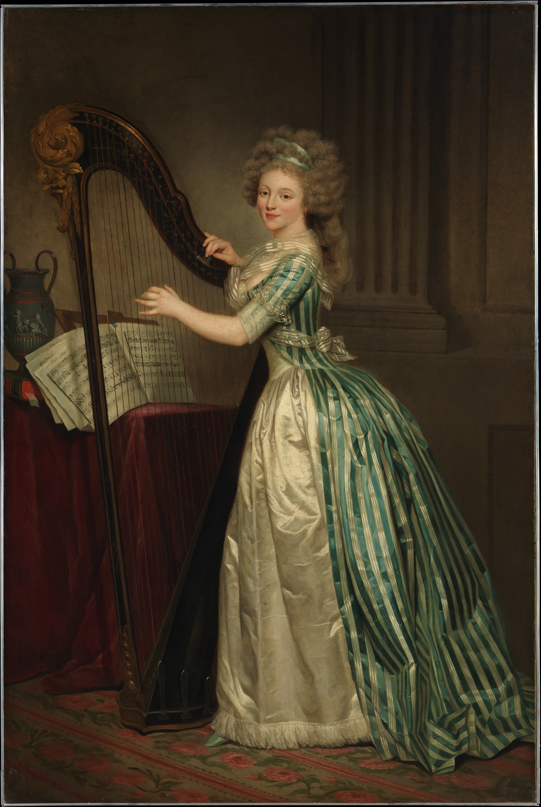
The ambitious group portrait Self-Portrait with Two Pupils, Marie-Gabrielle Capet and Marie Marguerite Carreaux de Rosemond, a work today considered her masterpiece. It remained in her collection her entire life. With its large size and virtuoso treatment of silk, lace, and other luxurious materials, the work served as publicity for the artist Adélaïde Labille- Guiard’s talent as a portrait painter. It also offered a demonstration of female friendship, and of Labille-Guiard’s commitment to training other women to follow in her footsteps.
Adélaïde Labille-Guiard was born in 1749 in Paris, she began her artistic training with a neighbour who was a miniaturist when she was 14, little is known about her training due to the practices of the 18th century which dictated masters should not take on female pupils. She died in the age of 54.
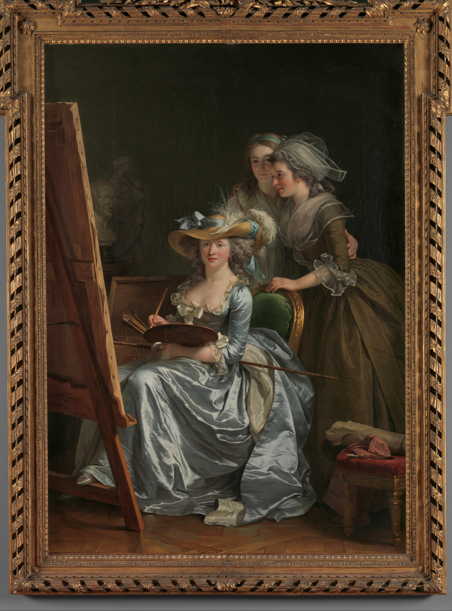
Self-portrait at Twenty-Seven Years Old is one of the series self- portraits of Gillian Wearing, she was born in 1963 in Birmingham, England. Wearing is an English conceptual artist, and is known for her method of documentation of everyday life through photography and video, concerning individual identity within the private and the public spaces, where Wearing blurs the line between reality and fiction.
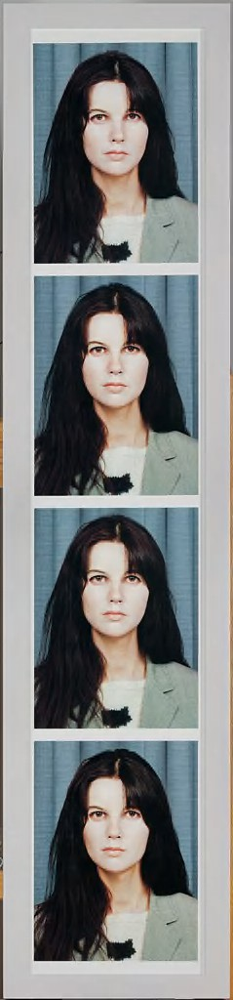
The Seated Nude (Self-portrait) was created by Paula Modersohn-Becker, who was a German painter and one of the most important representatives of early expressionism. Her career was cut short when she died from postpartum embolism aged of 31. She is recognised as the first known female painter to paint nude self- portraits. She was an important member of the early 20th century modernism movement.
Although Paula Modersohn-Becker died in 1907, just as the Expressionist groups in Dresden and Munich were forming, the themes of her work prefigure the movement. This likely self-portrait exhibits her desire to convey not the idealized appearance of the female body but rather its fundamental essence, stripped of all the world’s trappings. She distilled the human body into flattened forms—achieved by erasing and blending the charcoal—and abbreviated the delineation of the feet, hands, and face. The sitter’s piercing stare invites the viewer to move beyond the body as flesh and blood toward her emotional or spiritual state. She had a very brief career life, yet prolific.
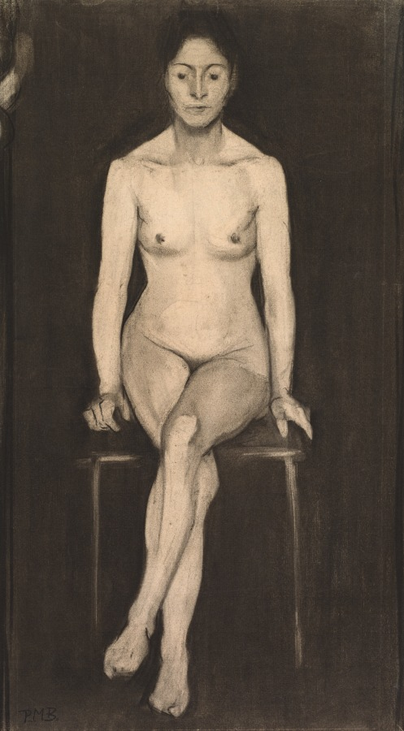
The self-portrait depicted the American photographer Nancy Goldin (born in 1953), whose work often explores LGBT bodies, moments of intimacy, the HIV crisis, and the opioid epidemic. Goldin's first solo show, held in Boston in 1973, was based on her photographic journeys among the city's gay and transgender communities. While living in downtown Boston at age 18, Goldin "fell in with the drag queens," living with them and photographing them. Unlike some photographers who were interested in psychoanalyzing or exposing the queens, Goldin admired and respected their sexuality. Goldin said, "My desire was to show them as a third gender, as another sexual option, a gender option. And to show them with a lot of
respect and love, to kind of glorify them because I really admire people who can recreate themselves and manifest their fantasies publicly. I think it's brave".
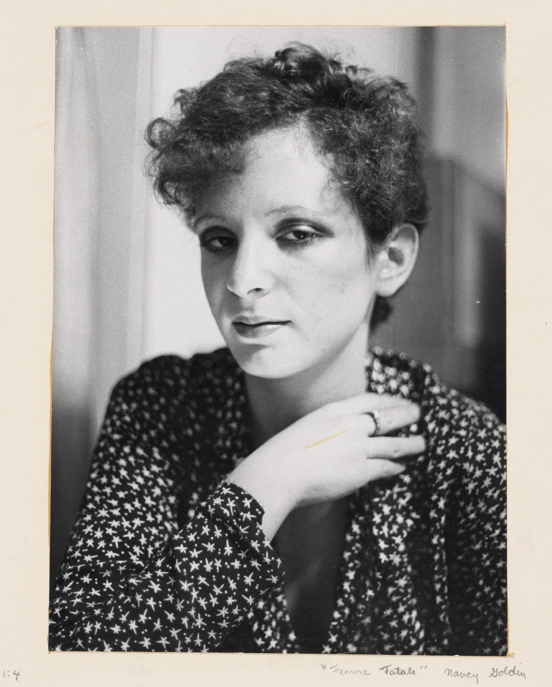
Sandra Stark used a very unusual way to show herself, the title of the self-portrait is The Balancing Art-Self-Portrait. She is a senior faculty member in photography at The School of the Museum of Fine Arts, Boston. She is also a professional fiddle player, playing in bands since 1971.
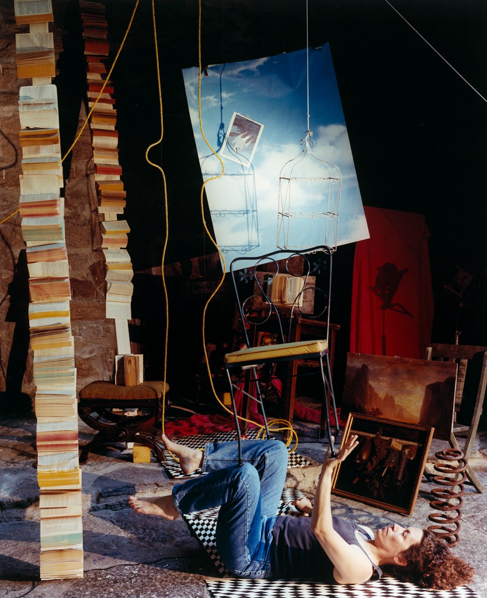
Cecil Buller (1886-1973) was a Canadian artist. The self-portrait is one of the series of wood engravings for her book Song of Solomon.
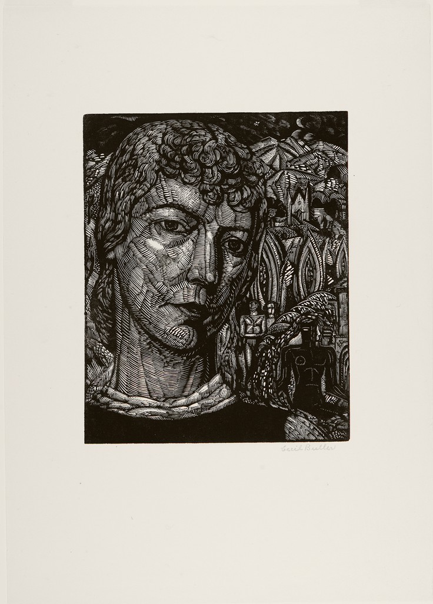
This self-portrait was created by Peggy Bacon in 1925. In the picture, she captured the scene that she was creating in front of her easel, and her cat was dozing at her feet. Peggy Bacon was an American artist, best known for her satirical caricatures. Born in 1895, Bacon was a very prolific artist, and at the age of 24, she wrote and illustrated her first book, The True Philosopher and Other Cat Tales and she went on to illustrate over 60 books, 19 of which she also wrote. Her popular drawings appeared in magazines such as The New Yorker, New Republic, Fortune and Vanity Fair, and she exhibited in galleries and museums frequently. Bacon’s eyesight began failing in 1970s, and she died at the age 91.
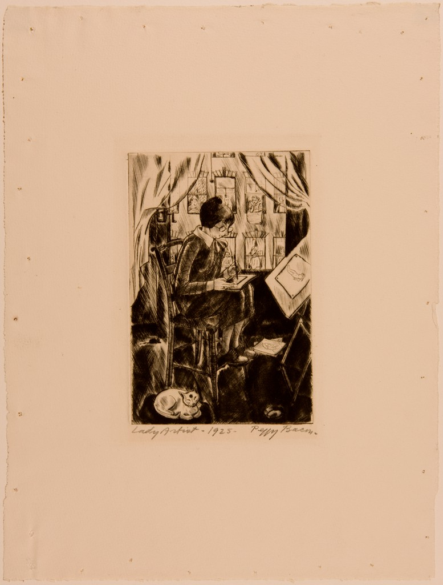
Self-portrait with Daughter Julie is a work by Berthe Morisot, who was considered as a founding member of Impressionism, whose marquee names counted themselves as both admirers and friends. But, unlike her peers, whose more experimental inclinations were tempered by a need to please patrons, her canvases bear vivacious brushstrokes and unusual figuration which nearly leapfrogged Impressionism to abstraction. She featured prominently in every annual Impressionist exhibition, except one that she missed because she was recovering after the birth of her daughter. These shows were generally met with acclaim. Critic Paul Mantz wrote in his review of the third Impressionist exhibition in 1877 that “there is only one true Impressionist in the whole
revolutionary group—and that is Mlle Berthe Morisot.” Yet Morisot’s gender also played a role in how she was perceived. Writers in her day used terms like “flirtatious” and “charming” to describe her work; neither were labels given to the paintings of Claude Monet, Pierre-Auguste Renoir, and others.
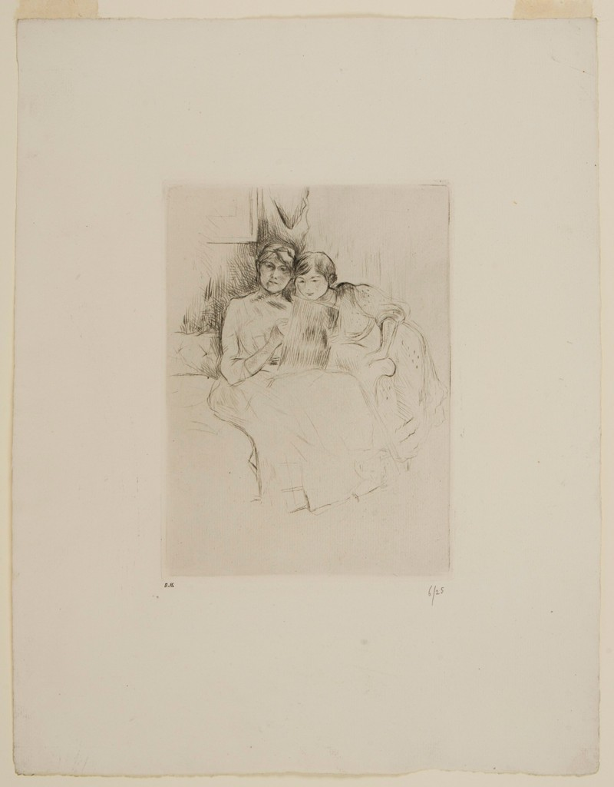
This self-portrait was created when Kollwitz was 45 years old. Käthe Kollwitz was born in 1867, and was a German artist who worked with painting, printmaking (including etching, lithography and woodcuts) and sculpture. Her most famous art cycles, including The Weavers and The Peasant War, depict the effects of poverty, hunger and war on the working class. Despite the realism of her early works, her art is now more closely associated with Expressionism. Kollwitz was the first woman to not only be elected to the Prussian Academy of Arts but to also receive honorary professor status. Kollwitz made a total of 275 prints, in etching, woodcut and lithography. Virtually the only portraits she made during her life were images of herself, of which there are at least fifty. These self-portraits constitute a lifelong honest self-appraisal; "they are psychological milestones"
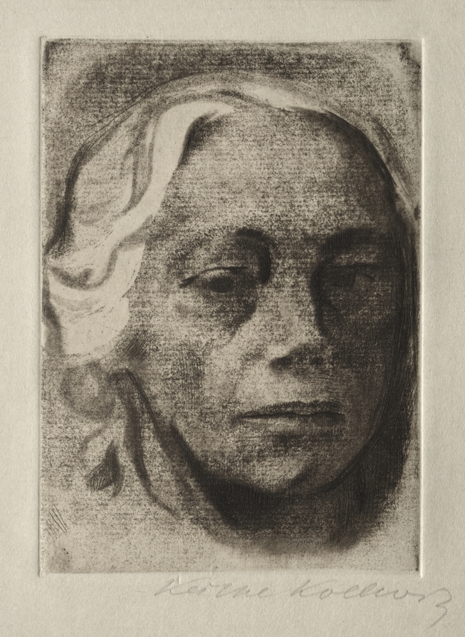
This self-portrait was created when Kollwitz was 48 years old.
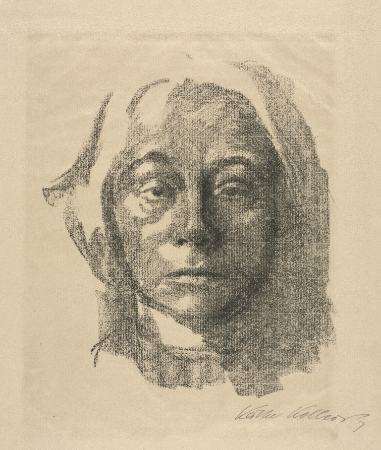
This self-portrait was created when Kollwitz was 67 years old.
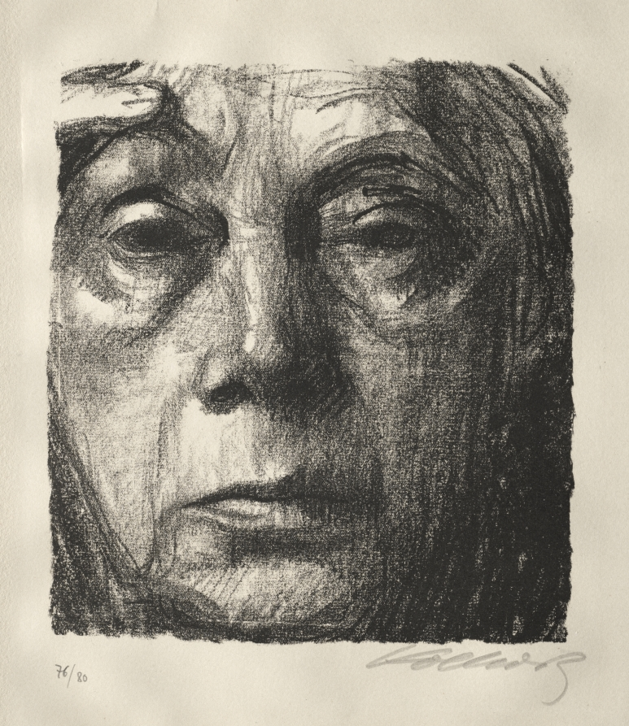